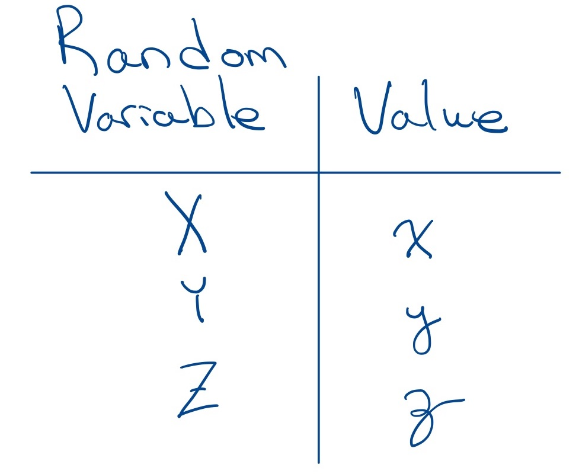

Definition of a Real Random Variable
Contents
8.1. Definition of a Real Random Variable#
In the introduction, we provided an informal definition for a random variable. The informal definition is helpful to build some intuition about what we mean by a random variable. However, we want to develop random variables in such a way that we can take advantage of all of the properties of the probability spaces that we developed in Axiomatic Probability. In this class, we will only consider the case of real random variables, but random variables can also be complex-valued.
Let’s start by introducing some notation that we will use for random variables and in our discussion below:
We will generally use upper-case (capital) letters to represent a random variable, such as \(X\), \(Y\), or \(Z\). We may choose the letter to represent a particular quantity, such as representing a random time by \(T\) or a random rate by \(R\). For a generic random variable, we will usually use \(X\).
We want to ask about the probability that a random variable’s value lies in some set. Until now, we have used \(P\) to denote either a probability or a probability measure. We will draw a distinction between these below, where we will write \(\operatorname{Pr}()\) to denote a probability and \(P()\) to denote a particular probability measure.
We will have the need to provide notation for an arbitrary value that a random variable may take on. Such a value will be represented by the lower-case version of the letter used to denote the random variable. In other words, we can ask about the probability that the random variable \(X\) takes on a value \(x\), which we can write as \(\operatorname{P}(X=x)\). In particular, we can define functions this way; for instance, we can create a function of \(x\) that returns \(\operatorname{Pr}(X=x)\) for each real \(x\), like \(p_X(x) = \operatorname{Pr}(X=x)\).
Warning
Many people learning probability get confused by the notation of using an upper-case letter for a random variable and using a lower-case letter for the value of a random variable.
This confusion is especially bad when it comes to handwritten math because many people use very similar letter styles for both the upper-case and lower-case versions of their letters.
Here are my recommendations to reduce this confusion:
Write your random variables in a san serif style. Serifs are decorative strokes at the ends of letters, so write your upper-case letters in a block style without serifs.
Write the lower case versions with curvy serifs.
Some examples are below:
{kind=link}

I recommend crossing the stem of the upper-case \(Z\) to help distinguish it from the number two.
As mentioned above, we wish to be able to evaluate the probabilities that a random variable takes on certain sets of values. There are several immediate problems:
How can we define a random variable so that we can evaluate the probability that it will take on a set of values in a way that is consistent with our work on probability.
As in the case of event classes and probability measures, it turns out that we cannot come up with a rule that will assign a meaningful probability to any arbitrary set of values that a random variable might take on. How can we choose reasonable sets of values to assign probability to, and how can we evaluate those probabilities?
Our approach may seem a bit strange at first, but it defines random variables in a way that directly leverages our work on probability spaces. Suppose we have a probability space \((S, \mathcal{F}, P)\), and we want to use the probability measure \(P\) from this probability space to determine the probabilities for a random variable \(X\). Then if \(B\) is a set of real values, we want to translate \(\operatorname{Pr}(X \in B)\) to some probability \(P(E_B)\), where \(E_B \in \mathcal{F}\) is an event in our probability space. To achieve this, we must have that the outcomes (which do not have to be numbers) in \(E_B\) correspond in some way to the real values in \(B\). Since we need to be able to determine what outcomes in \(E_B\) correspond to the set of reals \(B\), then there must be a function that maps from the outcomes in \(E_B\) to the real values in \(B\). We define the random variable \(X\) as that function: it is a function that maps the outcomes in \(S\) to the real line.
Formally, we do not write a random variable as \(X\) but instead write it as \(X(s)\) to indicate that it is a function of an outcome in the sample space. Note also that the function itself is not random. In other words, if we know that some particular value \(s_1 \in S\) occurred, then \(X(s_1)\) is a deterministic real number.
Note
In the discussion below, we get into some very fine details about random variables, and this discussion is more mathematically challenging than is usually included in a book at this level. I have chosen to include this level of detail for two reasons:
This careful approach establishes a solid foundation for further study of probability.
This approach will motivate our use of a particular function in working with random variables.
Do not be concerned if you do no understand every detail of these arguments: in practice, we will use a very pragmatic approach for working with random variables that does not require us to worry about the following details.
Thinking back to our work on probability spaces, you should recall that we cannot define \(P(A)\) for all \(A \subset S\) if \(S\) is uncountably infinite. We can only define \(P(A)\) if \(A \in \mathcal{F}\). Thus, we will need to introduce some additional restrictions on \(X\) to ensure that the sets of values \(B\) for which we define the probability \(\operatorname{Pr}(X \in B)\) correspond to events \(E_B \in \mathcal{F}\). There is no way to create a random variable that ensures that this will be true for every set of real values \(B\), so we must introduce a restriction on the sets \(B_i \subset \mathbb{R}\) for which we will define \(\operatorname{Pr}(X \in B_i)\).
Let \(\mathcal{B}\) be a set of all of the subsets of \(\mathbb{R}\) for which we will define \(\operatorname{Pr}(X \in B)\) if \(B \in \mathcal{B}\).
We want to at least be able to ask questions like what is \(\operatorname{Pr}(X=x)\) and what is \(\operatorname{Pr} \left\{X \in [a,b)\right\}\), and we can easily see that we would like to create unions of such sets: for instance, if \(X\) represents the value on the top-face of a six-sided die, we may want to determine the probability that the dies is even. If \(A\) represents the age of people who have been hospitalized for Covid, we may wish to assess the impact on people outside of the usual working age by determining the probability that \(A\) is less than 18 or greater than or equal to 65. Thus, we can use the following generalization of the intervals:
DEFINITION
- Borel sets (of \(\mathbb{R}\))#
The collection of all countable unions, intersections, and complements of intervals.
The collection of Borel sets is called the Borel \(\sigma\)-algebra or the Borel field (technically, including the operators \(\cup\) and \(\cap\)). For conciseness, we will use the terminology Borel field to refer to the collection of Borel sets of \(\mathbb{R}\).
Note
The Borel field for \(\mathbb{R}\) can be formed from the countable unions, intersections, and complements of the half-open intervals \((-\infty, x)\) for all \(x \in \mathbb{R}\).
To be able to define the probability \(\operatorname{Pr}(X \in B)\) for every Borel set \(B\), we must require that if we collect the set of outcomes that result in \(X \in B\), then that set must be an event. In mathematical notation, we require that \(\left\{s \left \vert X(s) \in B \right. \right\} \in \mathcal{F}\).
Putting all of this together, we have our formal definition for a random variable:
DEFINITION
- random variable#
(Formal definition) Let \((S, \mathcal{F}, P)\) be a probability space. Then a random variable is a function that maps from the sample space \(S\) to the real line \(\mathbb{R}\), such that if \(B\) is in the Borel field for \(\mathbb{R}\), then \(\left\{s \left \vert X(s) \in B \right. \right\} \in \mathcal{F}\).
Since a random variable is a function, we have the following properties:
A particular outcome \(s \in S\) maps to exactly one value of \(X(s)\).
For a particular value \(X=x\), there may be multiple values of \(s\) for which \(X(s) =x\).
For any two different values \(x_1 \ne x_2\), the sets \(\left\{ s \left \vert X(s) = x_1 \right. \right\}\) and \(\left\{ s \left \vert X(s) = x_2 \right. \right\}\) are disjoint; otherwise, there must be some outcome \(\tilde{s}\) that belongs to both sets and for which both \(X(\tilde{s})=x_1\) and \(X(\tilde{s})=x_2\). This is not possible if \(X(s)\) is a function.
One important factor in classifying a random variable, \(X\), is based upon the number of values \(X\) can take on. Since \(X\) is a function of \(s\), the set of values that \(X\) takes on is called the range of \(X\):
DEFINITION
- range of a random variable#
Let \(\left( S, \mathcal{F}, P \right)\) be a probability space and let \(X(s)\) be a random variable on that space. Then the range (or image) of \(X(s)\), denoted by \(\operatorname{Range}(X)\) is the set of values that \(X(s)\) can take on, which is given by \begin{equation} \bigl\{ X(s) \left \vert s \in S \right. \bigr\}. \end{equation}
Note that \(\left\{s \left \vert X(s) \in B \right. \right\}\) defines the set of outcomes that produce a set of values in the range of \(X(s)\), so we abbreviate this as \(X^{-1}(B)\).
Thus, we can write
Since the probability is evaluated using the probability measure \(P\), for convenience of notation, will just write \(P(X \in B)\) in the remainder of this book.
To help make these ideas more clear, we consider some simple examples. In each example, we show a graphical depiction of the sample space for an experiment with directed arrows that indicate the mapping from the sample space to values of the random variable, which are shown on a number line.
Example 1
Let’s create a binary random variable that has equal probability of being 0 or 1. Such a random variable can be created using many different probability spaces, but lets pick a simple one that we are already familiar with. We will flip a fair coin. Then \(S = \left\{H, T \right\}\) and
The probability measure is given by
We can create our random variable as the function \(X(s)\) given by
The figure below shows this mapping:
Note
This concrete example helps make an important point:
A random variable is defined on the sample space – it is a function whose argument is an outcome. In this case, the argument of the function is either \(H\) or \(T\).
Contrast this with the probability measure, which is defined on the event class – its argument is an event. The probability measure can take as argument any of \(\emptyset, \{H\}, \{T\}, or \{H,T\}\).
Let’s implement our random variable as a function in Python. The function takes an argument which is one of the outcomes \(H\) or \(T\) and performs the mapping shown above:
def X(s):
if s == 'T':
return 0
elif s == 'H':
return 1
else:
raise Exception("The Random Variable X only takes inputs H or T")
Next we will generate an outcome to simulate flipping a fair coin using random.choice() as we have before. Start by importing the random library and setting up the sample space:
import random
sample_space = [ 'H', 'T']
Let’s draw 10 different random outcomes \(s\) from the sample space and output the corresponding value of the random variable:
for i in range(10):
s = random.choice(sample_space)
print(i, s, X(s) )
0 T 0
1 H 1
2 H 1
3 T 0
4 T 0
5 H 1
6 T 0
7 H 1
8 T 0
9 T 0
Now we demonstrate how we can use the definition of the random variable and the underlying probability measure to evaluate probabilities for the random variable.
We start with the simplest case. We wish to find \(P[X(s)=0]\), which is illustrated on the number line portion of the diagram below by a green X:
Graphically, we can see that there is exactly one outcome \(s \in S\) for which \(X(s)=0\); that is, \(X(T)=0\). Mathematically,
We can use our Python random variable to estimate this probability by generating a large number of values of the random variable and finding the relative frequency of the value 0:
num_sims = 10_000
counter=0
for sim in range(num_sims):
s = random.choice(sample_space)
x = X(s)
if x == 0:
counter+=1
print(f'Pr( X = 0 ) is approximately {counter/num_sims}')
Pr( X = 0 ) is approximately 0.4991
Now lets consider \(P(X \le -0.5)\), which is shown by the green line below. The square brace at the point 0.5 indicates that the point 0.5 is included in the region, and the arrow indicates that the region continues to \(-\infty\). We could write an equivalent form for this probability as \(P( X \in (-\infty, -0.5]\).
This region introduces an important concept: we are not constrained to ask only about the probability of points in the range of \(X(s)\). We can ask about the probability of any Borel set of \(\mathbb{R}\).
However, for this region, we can see that there are no points in \(S\) that yield any values of \(X(s)\) in \((-\infty, -0.5]\). Thus, \(P\left[ X(s) \le -0.5 \right] = P\left[ \emptyset \right] = 0\)
Next consider \(P(0 < X \le 1)\), which is shown below. The parenthesis at the point 0 indicates that it is not a part of this region. We may also write this probability as \(P\left[ X \in (0, 1] \right]\).
As illustrated in the figure by the green line and the green shading on the point \(H\) in \(S\), there is again only one \(s \in S\) that gives a value of \(0 < X \le 1\). So, in this case, \(P\left[ 0 < X \le 1 \right] = P\left[ \left\{H \right\} \right] =1/2\).
To simulate this probability, we will need to rewrite the condition \(0 < X \le 1\) into a form that more directly translates to Python. Note that this form is really a shorthand for two conditions:
the left-hand side of the inequality is \(0< X\), but we more commonly flip that relation to write \(X>0\) when writing a single inequality, and
the right-hand side of the inequality is \( X \le 1\). We are asking about the probability for values of \(X\) that satisify both of these inequalities, so we may also write \( X> 0 \cap X \le 1\)
A simulation to estimate the probability of \(X\) satisfying these condition is shown below:
num_sims = 10_000
counter=0
for sim in range(num_sims):
s = random.choice(sample_space)
x = X(s)
if x >0 and x <= 1:
counter+=1
print(f'Pr( 0 < X <= 1 ) is approximately {counter/num_sims}')
Pr( 0 < X <= 1 ) is approximately 0.4926
We consider one final probability for this random variable, \(P( x < 1.5)\), which is illustrated in the figure below.
In this case, there are two different values of \(s \in S\) such that \(X(s) < 1.5\). In particular, \(X(T) =0 < 1.5\) and \(X(H)=1 < 1.5\). If we let \(B=(-\infty, 1.5)\), then \(X^{-1} (B) = \left\{H, T \right\}\), and \(P(X < 1.5) = P\left[ X \in B \right] = \left[ X^{-1}(B) \right] = P\left[ \left\{H, T \right\} \right] =1\).
Example 2
Let’s create a binary RV \(Y\) from tossing a fair coin twice. We will use the following rule: the random variable is 1 if at least one heads occurs; otherwise it is 0. Mathematically, we write the definition of \(X(s)\) as
Pictorially, this relation is shown below, where all of the points within the blue region of \(S\) are mapped to 1.
From the figure and mathematical definition of \(Y(s)\), we can see that \(Y^{-1}(0) = \left\{TT \right\}\) and \(Y^{-1}(1) = \left\{HH, HT, TH \right\}\). This is our first example where we see that multiple \(s\) can map to the same value of a random variable. Thus even if we ask an equation like \(P\left[Y(s)=y \right]\), the underlying event may contain multiple outcomes, as in this case. Given that the coin is fair, it is easy to see that the probability of each outcome is 1/4, so \(P\left[ Y(s) = 0 \right] = 1/4\) and \(P \left[ Y(s) =1 \right] = 3/4\). This is our first example of a random variable with unequal probabilities, and it was built from a fair experiment, in which each outcome has an equal probability of occurring.
Now, let’s implement \(Y\) as a function in Python. We will draw two values of the coin using random.choices(), which will return a list, so we will build the function Y() accordingly:
def Y(s):
if s == ['T', 'T']:
return 0
elif s in [ ['T', 'H'], ['H', 'T'], ['H', 'H'] ]:
return 1
else:
raise Exception('Must input a list of two elements, each of which may be either "H" or "T"')
Now let’s estimate the probability that \(Y=1\) via simulation:
num_sims = 10_000
sample_space = ['H', 'T']
counter=0
for sim in range(num_sims):
s = random.choices(sample_space, k=2)
y = Y(s)
if y == 1:
counter+=1
print(f'P(Y=1) is approximately {counter/num_sims}')
P(Y=1) is approximately 0.7418
Example 3
Let’s create another RV \(Z\) using the same probability space as the last experiment; i.e., define \(Z(s)\) using the same outcome. Let \(Z\) be the number of heads that occurred. Then the mathematical definition of \(Z(s)\) is given by
We can depict this relationship graphically below:
Note that even though \(Z\) is created from the same probability space, it takes on a different set of values and is not even a binary random variable. The point probabilities \(P(Z=z)\) are easy to find:
Consider an example of what can happen when \(Y(s)\) and \(Z(s)\) are created from the same outcome. If you are given no information about \(Y\), then we can see from above that \(P(Z=0) = 1/4\). Now suppose I told you that \(Y=0\). From above, we see that \(Y^{-1}(0) = TT \) and \(Z(TT) = 0\). So we know that \(Z=0\) with probability 1. Thus \(Y\) and \(Z\) are dependent random variables – we haven’t defined exactly what this means yet mathematically, but we can see that they are dependent by this example.
To illustrate this concept, we implement the random variable \(Z\) as a function and conduct a simulation to estimate \(P(Z=0)\) and \(P(Z=0|Y=0)\), which corresponds to the description above that “I told you \(Y=0\)”.
def Z(s):
if s == ['T', 'T']:
return 0
elif s in [ ['T', 'H'], ['H', 'T']]:
return 1
elif s == ['H', 'H']:
return 1
else:
raise Exception('Must input a list of two elements, each of which may be either "H" or "T"')
num_sims=100_000
count_z0 = 0
count_y0 = 0
count_z0_y0 = 0
for sim in range(num_sims):
s = random.choices(sample_space, k=2)
y = Y(s)
z = Z(s)
if z == 0:
count_z0 += 1
if y == 0:
count_y0 += 1
if z == 0:
count_z0_y0 += 1
print(f'P(Z=0) is approximately {count_z0/num_sims}')
print(f'P(Z=0|Y=0) is approximately {count_z0_y0/count_y0}')
P(Z=0) is approximately 0.2487
P(Z=0|Y=0) is approximately 1.0
As expected, these values closely match the results of our analysis.
JMS: Add JupyterQuiz questions about probabilities on ranges of this random variable to help students check understanding of this material.
All of these examples use discrete sample spaces, and the ranges of the random variables are all discrete, finite sets. These are called discrete random variables.The true power of working with random variables will be for the cases where these sets are uncountably infinite. However, before we get to those cases, the next section introduces some tools for working with discrete random variables and some common types of discrete random variables.